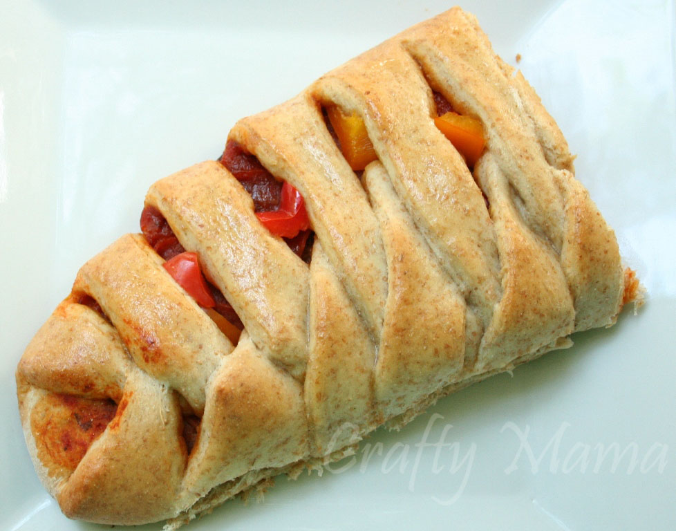
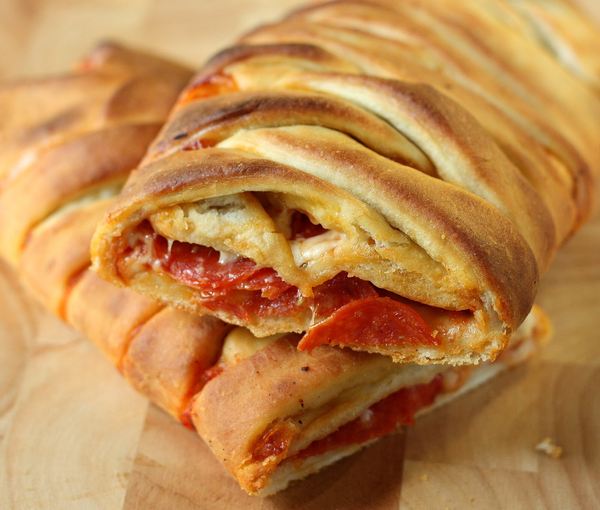

Somewhere between a stromboli and a calzone, this braid is the latest way to get your pizza fix. The flavor-packed dough envelops a hot, cheesy, saucy filling, which can be enhanced with any of your favorite pre-cooked pizza toppings.
About Pizza Braids
The pizza braid is not your average "pizza". It is unique in a few different ways. Instead of having your ingredients visible, it is inside of the crust. You can put ingredients on the top if you so choose, but that's up to you. To me, it is the best thing I ever made (taste wise). The pizza braid does not have a specific history to it. It was made not too long ago by unknown. It is a fun recipe to make by yourself, friends, and family.


Sometimes we all need an easy recipe to make for dinner for our families. This Pizza and Pepperoni Braid is just that…EASY! And you can have dinner on the table in under 30 minutes. Add a side salad and dinner is served.
